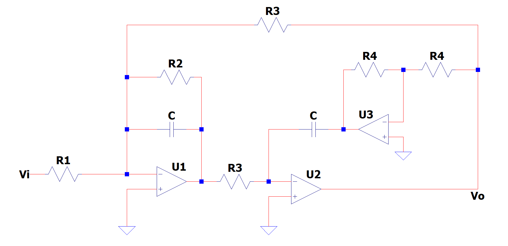
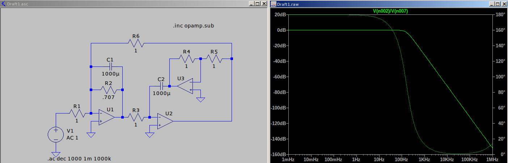
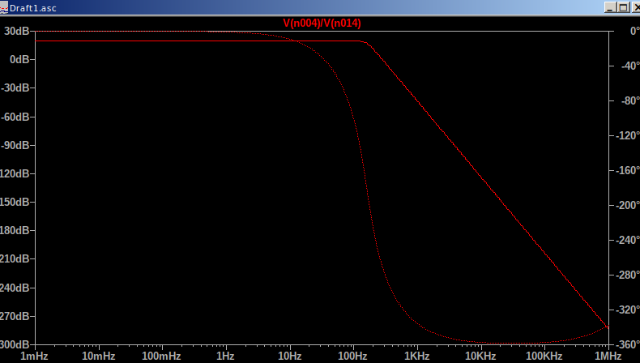
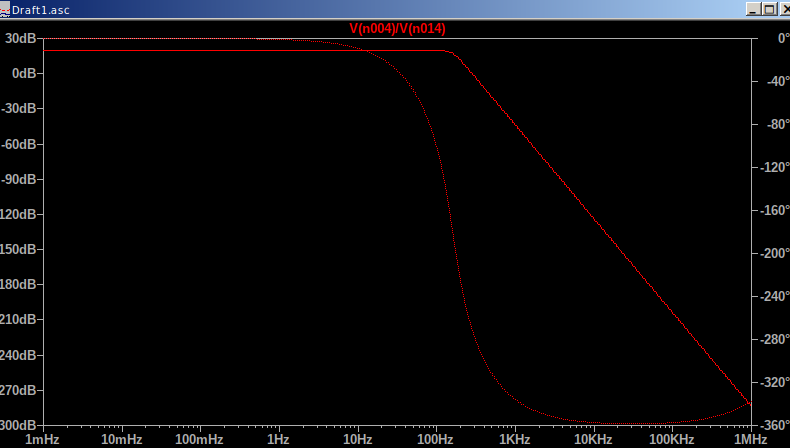

TP-Semanal 2
Enunciado

Consignas de la actividad:
👉 Hallar la transferencia T=VoVi en función de ωo y Q
.
👉 Hallar los parámetros ωo y Q y k
.
👉 Obtener el valor de los componentes para que el circuito se comporte como un Butterworth de 2do orden.
👉 Cómo podría obtener un filtro pasabajo Butterworth de 4to orden, a partir de un prototipo basado en este circuito, y que cumpla con |T(0)|=20dB
.
Bonus:
+10 💎 Obtener los valores de la red normalizados en frecuencia e impedancia.
+10 ⚽️ Simulación circuital de todos los experimentos.
+10 🎸 Cómo podría obtener un circuito pasabanda con los mismos componentes originales y con qué parámetros quedaría diseñado (Ver ejemplo 4.6 en Schaumann).
Obtencion de la T(S)
Busco las ecuaciones con Norton:
Obtengo de (3):
Reemplazando (3) en (2):
Reemplazando en (1)
Obtengo:
Los parametros son:
Colocando (5), (6) y (7) en (4):
Entonces normalizando en freq:
Reemplazando
La impedancia es:
Normalizo en impedancia:
Agregando la normalizacion de impedancia (12) en (10):
Los valores para conseguir un buttherworth de segundo orden son:
Dado que \(Q=\frac{1}{2cos(\phi)}\), los polos para un segundo orden estan en \(\pi/4\) y \(-\pi/4\). Por lo tanto:
Reemplazando (14) en (13):
Entonces para hacer que (13) satisfaga (15) y de la ecuacion (6), dado que \(G_3\) aparece en todos lados, se establece \(G_3=1\) y entonces \(G_2=1/\sqrt{2}\)
Simulacion

Para obtener un buttherworth de 4to orden:
Este se compone de dos transferencias, donde un par de polos esta a \(S_1=\pi/8\) y el otro \(S_2=3\pi/8\) entonces la T(S) queda:
Simulacion
 
